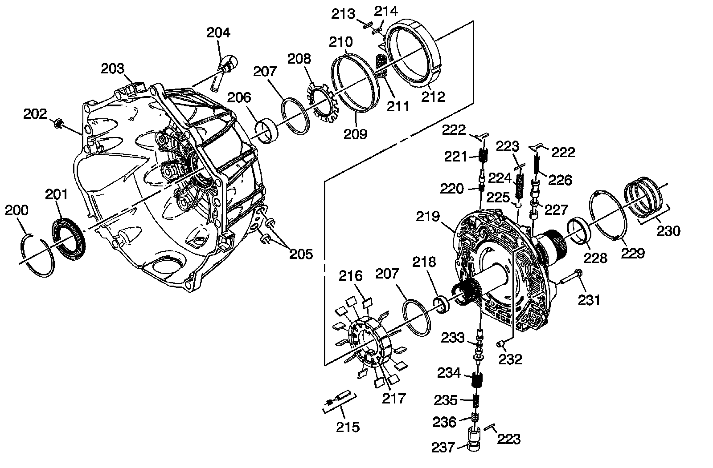

Torque Converter (W/Fluid Pump) Housing Assembly
Disassembled Views (6L80)
Torque Converter (w/Fluid Pump) Housing Assembly:

200 - Torque Converter Fluid Seal Retaining Ring
201 - Torque Converter Fluid Seal Assembly
202 - Line Pressure Test Hole Plug
203 - Torque Converter Housing - Model Dependent
204 - A/Trans Vent Pipe
205 - Trans Fluid Cooler Pipe Fitting Seal
206 - Torque Converter Bushing
207 - A/Trans Fluid Pump Vane Ring
208 - A/Trans Fluid Pump Rotor Guide
209 - A/Trans Fluid Pump Slide Fluid Seal Ring
210 - A/Trans Fluid Pump Slide (O-ring) Seal
211 - A/Trans Fluid Pump Slide Outer Spring
212 - A/Trans Fluid Pump Slide
213 - A/Trans Fluid Pump Slide Seal
214 - A/Trans Fluid Pump Slide Seal Support
215 - A/Trans Fluid Pump Slide Pivot Pin
216 - A/Trans Fluid Pump Vane
217 - A/Trans Fluid Pump Rotor
218 - Turbine Shaft Front Bushing
219 - A/Trans Fluid Pump Cover Assembly
220 - Converter Feed Limit Valve
221 - Converter Feed Limit Valve Spring
222 - Valve Spring Retainer
223 - Pressure Relief Ball Valve Spring Pin
224 - Pressure Relief Ball Valve Spring
225 - Pressure Relief Ball Valve
226 - TCC Control Valve Spring
227 - TCC Control Valve
228 - Turbine Shaft Rear Bushing
229 - 1-2-3-4 and 3-5 Reverse Clutch Housing Thrust Washer
230 - 1-2-3-4 and 3-5 Reverse Clutch Fluid Seal Ring
231 - Bolt, M6 x 40 mm
232 - A/Trans Fluid Pump Locator Pin
233 - Pressure Regulator Valve
234 - Pressure Regulator Valve Outer Spring
235 - Pressure Regulator Valve Inner Spring
236 - Isolator Valve
237 - Isolator Valve Sleeve